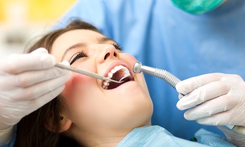
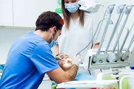
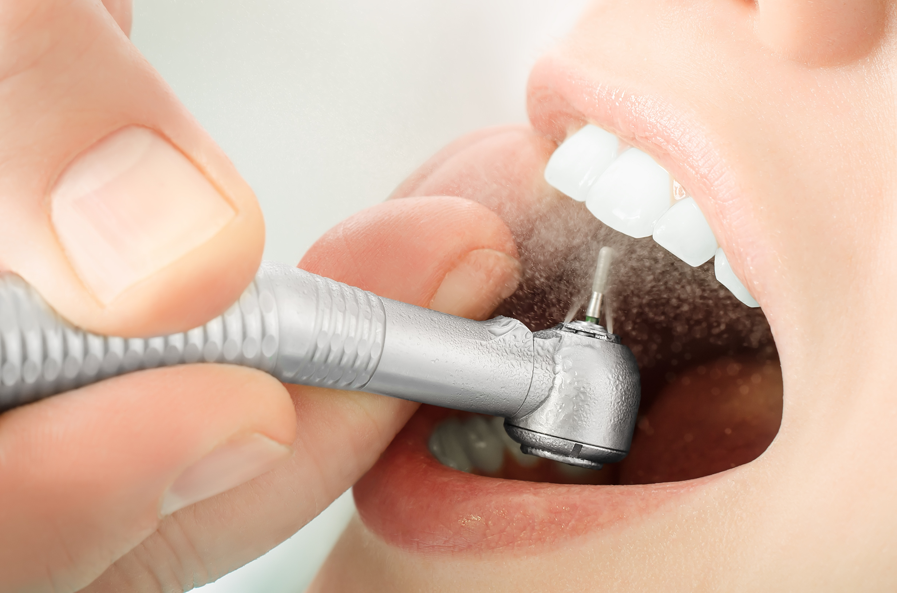
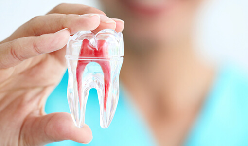
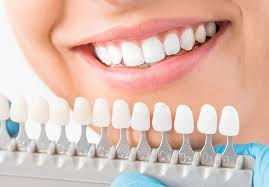
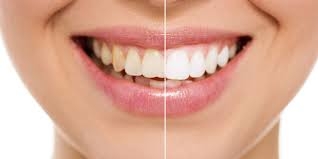
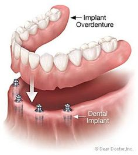

Our main ambition is your bright and relaxed smile |
 |
This area of dentistry is focused on ensuring that you have good oral hygiene and dental health. General Dentistry ensures that you do not have any issues such as cavities or gum disease.
|
 |
Dental restoration, dental fillings, or simply fillings, are treatments used to restore the function, ... They can be used in direct restorations to fill in the cavities created by dental caries and trauma, minor buildup for restoring tooth wear . |
 |
Endodontics is the branch of dentistry concerning dental pulp and tissues surrounding the roots of a tooth. “Endo” is the Greek word for “inside” and “odont” is Greek for “tooth.” Endodontic treatment, or root canal treatment, treats the soft pulp tissue inside the tooth. |
 |
Cosmetic dentistry is generally used to refer to any dental work that improves the appearance (though not necessarily the functionality) of teeth, gums and/or bite. It primarily focuses on improvement in dental aesthetics in color, position, shape, size, alignment and overall smile appearance. |
 |
This procedure is called chairside bleaching and usually requires only one office visit. The dentist will apply either a protective gel to your gums or a rubber shield to protect your gums. Bleach is then applied to the teeth. |
 |
Oral surgery refers to any surgical procedure performed in or around your mouth and jaw, usually by a dental specialist who's trained to perform certain kinds of oral surgeries. |
 |
A dental prosthesis is a dental appliance that replaces a missing tooth or covers up tooth defects. These dental appliances include implants, crowns, bridges, dentures and veneers, and some of them can be removable or permanently fixed in your mouth. |
 |
When used for surgical and dental procedures, the laser acts as a cutting instrument or a vaporizer of tissue that it comes in contact with. When used in teeth-whitening procedures, the laser acts as a heat source and enhances the effect of tooth-bleaching agents. |
 |
| Services | Doctors | New Life Hospital, No.26, Galle Road , Colombo 6 |
| Facilities | Health Packages | newlifehospital@gmail.com |
| Rooms | Patient Registration | 011 2635981 |
| Food & Beverages. | Channel your doctor | 011 2635982 |
©All Right Reserved | New Life Hospital